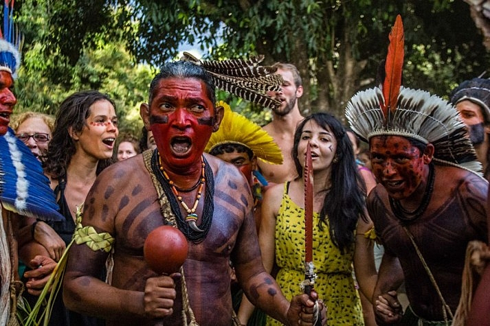

Águas Belas é um município brasileiro do Agreste do estado de Pernambuco.
Localiza-se a uma latitude 09º06'41" sul e a uma longitude 37º07'23" oeste,
estando a uma altitude de 376 metros.
Sua população estimada em 2010 era de 42.291 habitantes.
O município é formado pelo distrito-sede e pelos povoados de Campo Grande, Curral Novo, Garcia, e Tanquinhos.
História
O município de Águas Belas foi fundado em 30 de dezembro de 1963, desmembrando-se do município de Bom Conselho.

A região onde está situada a cidade de Águas Belas era, originalmente, território tupiniquin e que posteriormente se unificou aos carijós, que residiam nas imediações da Serra dos Cavalos.
A aldeia era conhecida como Lagoa, devido a uma lagoa existente no local, onde hoje se encontra a matriz de Nossa Senhora da Conceição, depois a povoação ganhou o nome de Ipanema.
Consta que, por volta do ano de 1700, apareceu na região o primeiro homem branco (João Rodrigues Cardoso), com objetivo de unificar as duas tribos existentes na região.
As terras indígenas foram demarcadas em 1875, embora os conflitos pela terra não tenham sido completamente sanados, entretanto, é necessário a redemarcação.
Em 2010, a FUNAI esteve em Águas Belas para iniciar o processo de edemarcação, entretanto, o processo ainda se encontra em fase e identificação.
A cidade de Águas Belas encontra-se dentro da reserva indígena.
Foram construídas dentro da reserva edificações, como a rodovia 423, que corta o lote dos índios pela metade.

Hoje cerca de 5.000 fulniôs também habitam uma área dividida em 427 lotes individuais, que totalizam 11.505 ha.
Vivem do artesanato e agricultura de subsistência. São ainda os únicos indígenas da região nordeste, com exceção as etnias do Maranhão
(Kanela (Apanyekra e Ramkokamekra), Krikati, Gavião (Pukobyê), Kokuiregatejê, Timbira do Pindaré e Krejê) com o idioma próprio, o Yaathê ,nas praticas culturais encontra-se algrituais como o Toré e Cafurna e o Ouricuri.
Águas Belas é famosa por suas festas tradicionais, como a Festa de São Sebastião, que atrai visitantes de várias regiões.
A cidade também é um ponto de passagem para quem visita o Sertão Pernambucano, oferecendo uma rica cultura e tradições locais.
Além disso, a economia local é baseada na agricultura, pecuária e comércio, com destaque para a produção de leite e derivados.
O município conta com diversas escolas, postos de saúde e uma infraestrutura que vem se desenvolvendo ao longo dos anos, buscando sempre melhorar a qualidade de vida de seus habitantes.
Águas Belas é um lugar que combina história, cultura e natureza, sendo um destino interessante para quem deseja conhecer o Sertão de Pernambuco.